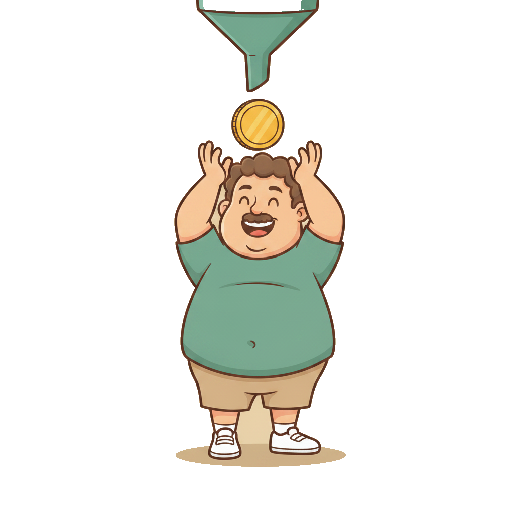
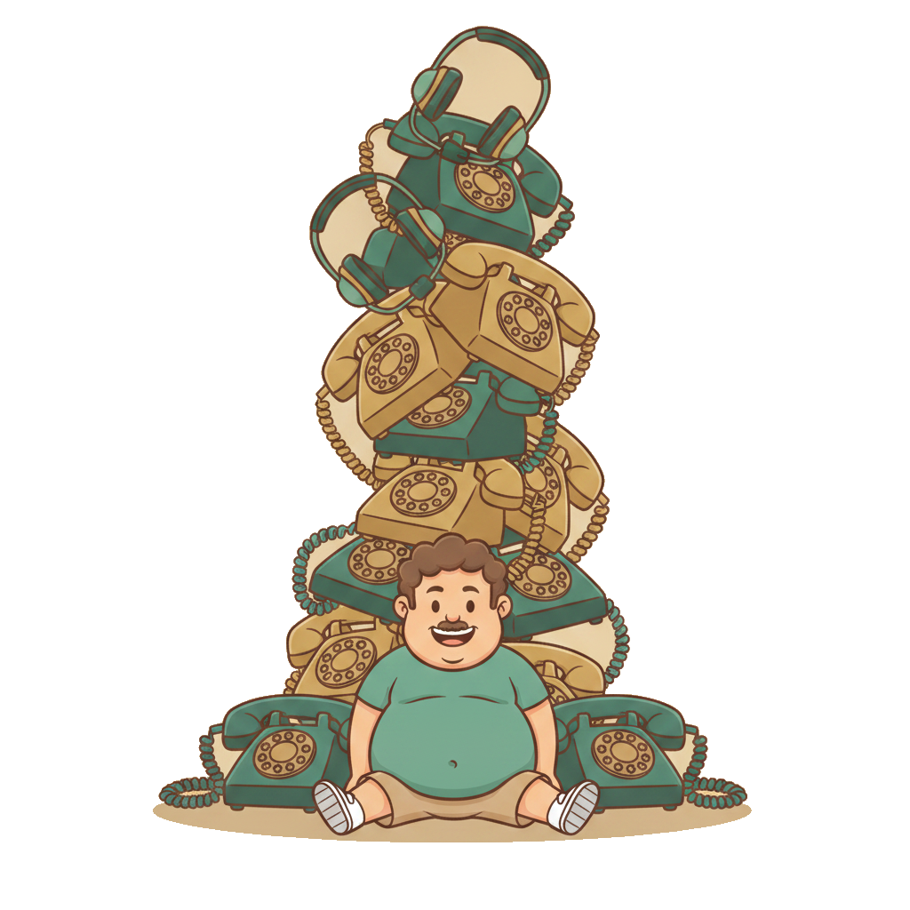
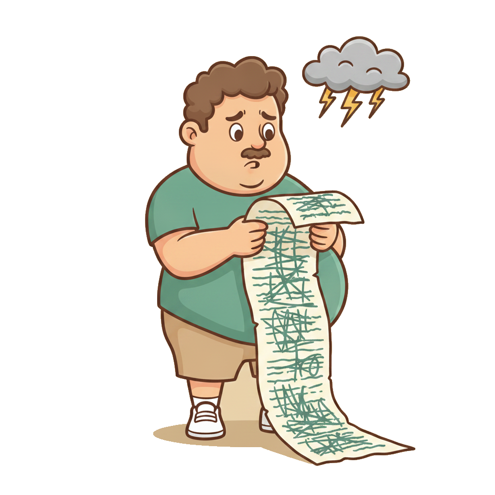
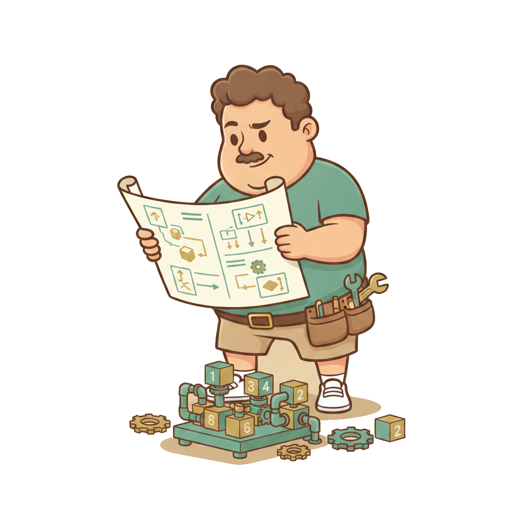
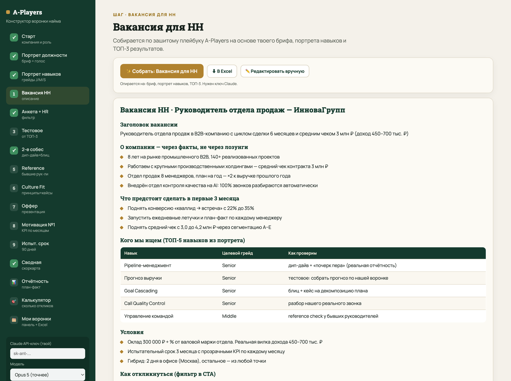
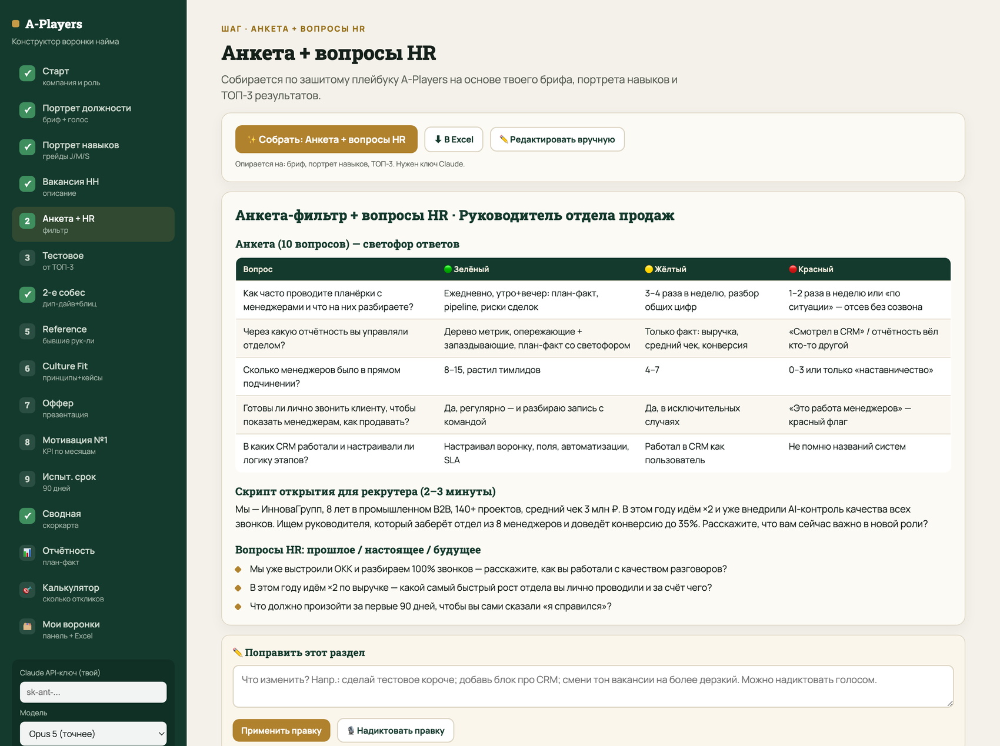
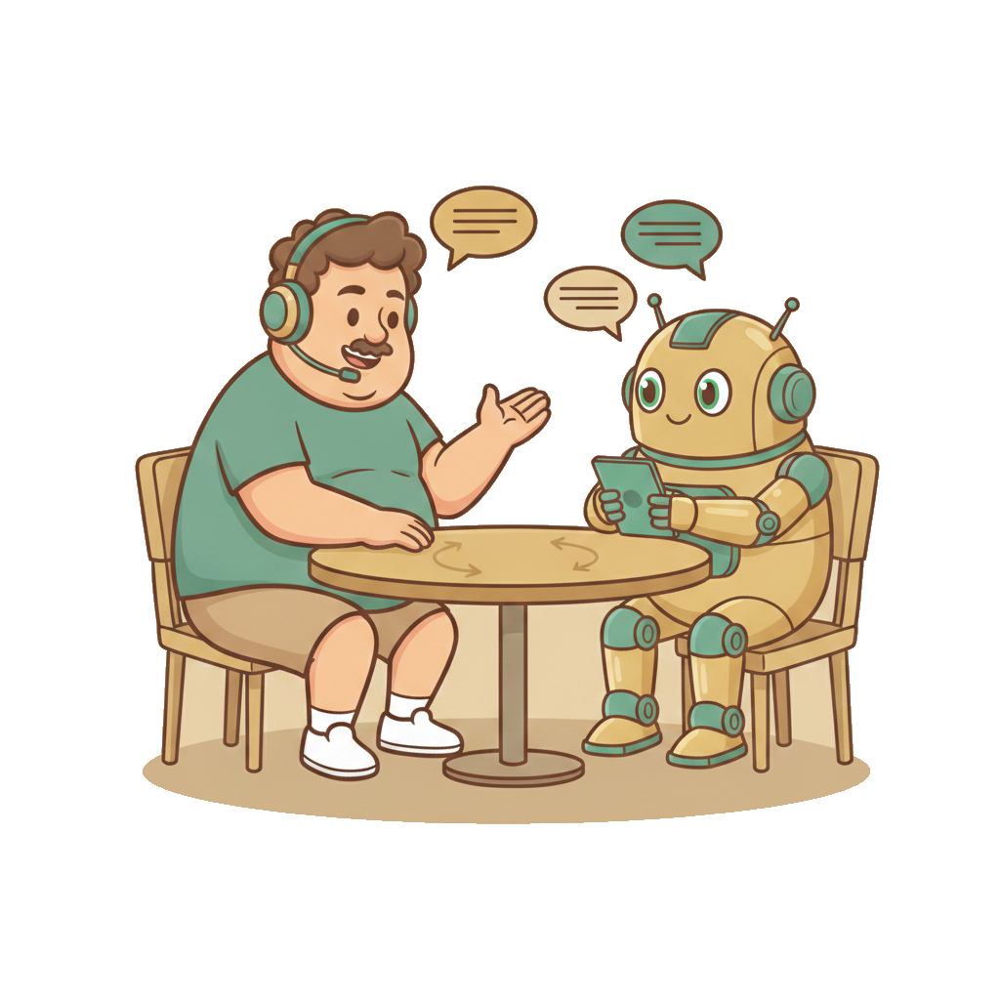
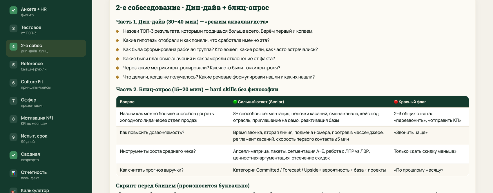
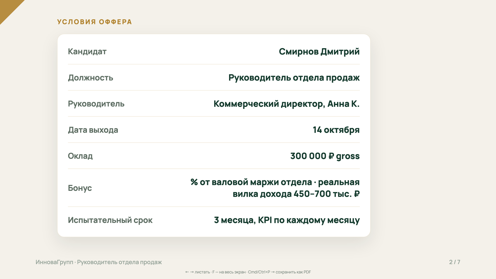
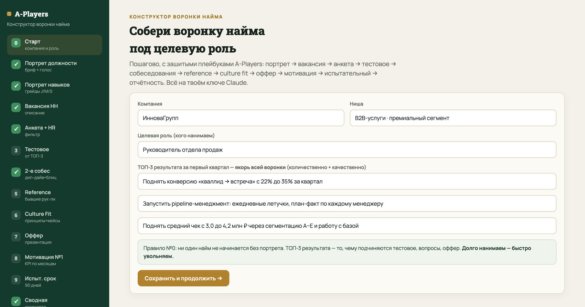

Воронка найма
под A‑Players
Современный найм — это маркетинговая воронка. Проектируем каждый этап: от портрета кандидата до презентации оффера. Не под «нормального сотрудника» — под чемпиона.

Систему собрали. Теперь —
люди, которые её потащат
- Любая гипотеза упирается в execution. Исполняют — люди
- Скорость роста = средняя компетенция команды, которую ты вокруг себя собрал
- Тему команды делим на три встречи: найм → people management → онбординг

Результат в 2,5 млрд случился,
когда перенаняли 60% управленцев
Хочешь ты это осознавать или нет — большие результаты всегда лежат через плоскость средней компетенции команды.
Прямая обязанность CEO
Постоянно искать людей сильнее себя. Это нормально и правильно — так делают все сильные фаундеры.
Среда формирует результат
Каждый человек либо усиливает среду, либо вытягивает энергию. Один токсичный убивает команду быстрее, чем приносит пользу.

Спроектировать воронку найма
на любую должность — за 1–2 дня
Портрет должности
Бриф из 60+ вопросов + портрет навыков с грейдами J/M/S и ТОП-5
Все 7 этапов воронки
Вакансия, анкета, вопросы HR, тестовое, 2-е собес, reference, culture fit
Оффер + план-факт
Презентация оффера, сводная по кандидатам, отчётность vs бенчмарки

Современный найм — это
маркетинговая воронка
Никакого «опубликовали вакансию и посмотрели, кто придёт». Проектируется каждый этап и каждый вопрос — ровно как в маркетинге.

Фундамент, без которого любой шаг даст результат хуже

Сотрудник молча задаёт себе три вопроса
Почему частная компания выигрывает 9 из 10
- Карьера растёт быстрее: нет 15 слоёв согласований
- Навыки растут быстрее: человек оркестрирует много процессов, а не крутит один винтик
- Доход гибче: доля, % от прибыли, привязка к результату — вместо зарплатной сетки по исследованию рынка
Полгода не с тем человеком =
12–15 окладов в реальных деньгах
Из чего складывается
- оклад и налоги
- твоё время на управление
- нереализованные проекты
- упущенные возможности
Сигнал «не бери»
Если чувствуешь, что идёшь на компромисс, — это не компромисс. Это твой мозг говорит «не бери».
За 16 лет ни один компромисс при найме не сыграл в плюс.
Долго нанимаем — быстро увольняем.

Восемь шагов, которые собираем сегодня
Это и есть оглавление. Пройдём по каждому шагу — и в конце соберём всё одним инструментом, который делает воронку под твою роль.

Столько фильтров нужно, чтобы из тысяч откликов получить одного
Сколько откликов нужно на одного нанятого
| Роль | Откликов | Анкет | Презентовано | Нанято | На 1 нанятого |
|---|---|---|---|---|---|
| РОП · кейс 1 | 1 404 | 464 | 3 | 1 | 1 404 отклика |
| РОП · кейс 2 | 620 | 123 | 4 | 1 | 620 откликов |
| РОП · кейс 3 | 2 392 | 1 134 | 52 | 1 | 2 392 отклика |
| РОП · кейс 4 | 807 | 348 | 13 | 1 | 807 откликов |
| Руководитель отдела продаж | 4 525 | 2 053 | 25 | 1 | 4 525 откликов |
| Руководитель отдела маркетинга | 1 655 | 331 | 15 | 1 | 1 655 откликов |
| Менеджер продаж · кейс 1 | 3 111 | 1 032 | 32 | 2 | 1 556 откликов |
| Ассистент · 2 позиции | 4 243 | 902 | 30 | 2 | 2 122 отклика |
| Офис-менеджер | 803 | 229 | 6 | 1 | 803 отклика |
Это не аномалия. Это норма
Линейные позиции
менеджеры, ассистенты, офис
Руководящие позиции
РОП, РО, директора
Современный найм — это поиск золота в реке. Трясём сито, трясём, трясём — и из всей «грязи» находим крупицу. Поэтому воронку и надо строить как маркетинговую.

Свои цифры сверяем с этой таблицей каждую неделю
| Переход воронки | Средняя CR | Что это значит, если у тебя хуже |
|---|---|---|
| Отклик → заполненная анкета | ~33% | ниже 20% — анкета длинная/сложная или пришёл не тот трафик |
| Анкета → 1-е собеседование (HR) | ~28% | ниже 15% — анкета плохо квалифицирует, нужны другие «красные флаги» |
| 1-е собес → выполнил тестовое | ~50% | ниже 30% — тестовое пугает объёмом или непонятно сформулировано |
| Тестовое → 2-е собес (hard skills) | ~55% | ниже 35% — тестовое не отделяет сильных от слабых |
| 2-е собес → презентация в компанию | ~35% | выше 60% — слабо фильтруете на hard skills |
| Презентация → финал | ~33% | здесь уже личная химия с фаундером |
| Финал → найм | ~20% | 1 нанятый из 3–9 финалистов |
Через 7 дней смотрим цифры —
и переписываем, если ниже нормы
| Метрика | Средний рынок | Хороший результат |
|---|---|---|
| Откликов за 7 дней · линейная | 50–150 | 200+ |
| Откликов за 7 дней · руководящая | 20–50 | 100+ |
| CR «просмотр → отклик» | 1–3% | 5%+ |
| Доля целевых из откликов | 10–20% | 30%+ |
Не жди месяц
Меньше нормы за 7 дней — переписывай заголовок и первый абзац. 80% вакансий улучшаются за 30 минут с ИИ.

Ни один найм не начинается,
пока нет портрета кандидата
Бриф — 60+ вопросов. Ни один не появился случайно: каждый когда-то стоил реальных денег и ошибки в найме.
Пример: «как эти задачи решаются сейчас?»
Появился, потому что кандидаты выходили и говорили «ожидание не совпало с реальностью». Потеря — три недели и человек.
Руками — 3 часа. Через ИИ — 30 минут
Заполняем не «по-своему», а ровно по шаблону. Как в коучинге: магия начинается, когда перестаёшь менять порядок вопросов.

Бриф заполняется голосом за 30 минут
🎙 WhisperFlow
Ставим на компьютер, зажимаем клавишу — надиктовали. Русская речь распознаётся, экономит огромное количество времени. В конструкторе диктофон встроен в каждый блок.
⚠ Лайфхак с Excel
Скачивай таблицы и раскрывай схлопнутые строки перед загрузкой в ИИ: скрытый текст модель не видит и теряет контекст.

Что чаще всего проваливают в брифе
ТОП-3 результата за квартал
Количественно + качественно. Это якорь всей воронки: тестовое, вопросы, кейсы и оффер подчиняются именно им.
Челленджи кандидата
С чем он реально столкнётся: трудные клиенты, незрелая команда, сжатые сроки. Не проговорили — в 80% случаев уходит через 2–3 месяца.
Компании-доноры
Где твой идеальный кандидат сидит прямо сейчас? Без ответа невозможно построить хантинг — и некуда идти за reference.

Так, чтобы на хлеб намазать можно
✗ Как не надо
«Отсутствие ошибок» · «Скорость» · «Навести порядок» · «Выстроить инфраструктуру»
не измеряется — в конце квартала не ответишь «случилось или нет»
✓ Как надо
- Перевести всю базу на новую CRM, пригодную для международного рынка
- Привести сайты и юрдокументацию к легальному приёму заявок в 3 юрисдикциях
- Дожать 4 зависших проекта до 98% готовности

Каждый навык — по грейдам
Junior / Middle / Senior
- Человека, у которого все навыки на Senior, не существует — это единорог
- Выбираем ТОП-5 навыков, критичных именно под наши ТОП-3 результата
- Комбинация навыков зависит от этапа компании и от того, какие проекты человек лидирует
Стиль управления решает
Поставишь системного администратора на запуск нового направления — с вероятностью 70% проект не поедет: он будет строить архитектуру.
Поставишь лончера на масштабирование — он не выстроит систему.

28 ролей с портретами уже внутри
- Выбрал роль — портрет раскрылся мгновенно, с реальными описаниями J/M/S
- AI рекомендует целевой грейд по каждому навыку под твои ТОП-3
- Нет нужной роли — «Другое», соберём по аналогии с эталоном

Пиаровский подход, не прямая продажа
✗ «Мы крутые»
«Динамично развивающаяся компания», «дружный коллектив», «стрессоустойчивость», «белая зарплата»
✓ Через факты и цифры
«Топ-1% в нише», «10 000+ учеников», «работаем с Ozon, Тинькофф, Перекрёсток», «вышли в Юго-Восточную Азию — 30% выручки»
кандидат делает вывод сам — эффект сильнее

Читай как усталый кандидат с тремя офферами на руках

Вакансия собирается из брифа и портрета

Один вопрос «красный флаг» экономит недели
- Прогоняем через анкету всех откликнувшихся, приглашаем только прошедших
- Ответы падают в единую таблицу → таблица + портрет в Claude → короткий шорт-лист
- Для сбора персданных в РФ — Яндекс.Формы, не Google Forms
- Максимум 10 вопросов, у каждого — 🟢 / 🟡 / 🔴
Кейс: вопрос про планёрки
«Как часто проводите планёрки с менеджерами?»
8 менеджеров × 50 звонков × 21 смена = 10 080 звонков в месяц.
Планёрки «1–2 раза в неделю» — этот pipeline физически не удержать. Ответ = автоматический отсев без созвона.

Анкета со светофором ответов + скрипт рекрутера

Даже формулировка вопроса продаёт компанию
Нейтрально
«Есть ли у вас опыт работы с международными рынками?»
Через контекст компании
«Мы уже вышли в Юго-Восточную Азию — это 30% выручки, дальше идём в Барселону. Нам важен опыт выхода на международку с нуля. Какой у вас?»

Запись → транскрипт → оценка кандидата
Что просим у модели
- оценка 1–10 с цитатами из транскрипта
- профиль DISC и стиль мышления
И обязательно
- 3 сильные стороны · 3 ключевых риска найма
- 2–3 возможности «сверх ожиданий»

Тестовое строится от образа результата, а не от «общих компетенций»
- Критерий: по тестовому мы с вероятностью 100% понимаем, вытащит ли человек ТОП-3 результата
- Проверяем те самые «мышечные группы», которые нужны под цели квартала
- Объём — не больше 4–6 часов работы кандидата (лучше 2)
- К каждому блоку — рубрика: Senior / Middle / ниже Middle
⛔ Отказ делать тестовое
Не берём на следующий этап ни при каких обстоятельствах. Даже если резюме потрясающее и HR прошёл идеально.
Это маркер вовлечённости: не выложился на найме — в работе выложится ещё меньше.

«Почерк пера» — покажи свою отчётность
Просим 1–3 регламента и отчёта, через которые кандидат управлял командой. Цифры можно удалить — нам нужна архитектура управления.
Что видно сразу
- только запаздывающие метрики: выручка, средний чек
- нет плановых значений — только факт
- нет светофора и анализа отклонений
Что ищем
- дерево метрик с опережающими показателями
- план / факт / отклонение по каждой строке
- точки контроля и ритм разборов

Дип-дайв: режим аквалангиста
Кандидат может собрать идеальное резюме с ИИ, подготовиться к стандартному собеседованию с ИИ и даже получать подсказки на экране в реальном времени. Дип-дайв это не обходит.
Как это выглядит
- «Назови ТОП-3 результата, которыми гордишься»
- Берём первый и копаем 15–20 вопросов вглубь
- Гипотезы, рабочая группа, роли, ритм встреч
- Плановые значения, отклонения, точки контроля
Зачем
Понять: человек сделал результат сам — или просто стоял рядом, пока результат происходил.
Кто дожимал сам — тот результат выстрадал. Эти знания остаются навсегда, его невозможно смутить вопросом.

Блиц-опрос: ни одна нейросеть к этому не подготовит
Скрипт перед блицем
«Вторая часть: я задаю вопросы строго по вашей роли. Задача — не уходить в философию и рассуждения, а называть как можно больше ответов, которые вы лично считаете правильными. Готовы?»
Примеры для РОПа
- Как догреть холодного лида через отдел продаж?
- Как повысить дозвоняемость?
- Как сегментировать трафик?
- Инструменты роста среднего чека? Retention? LTV?

Дип-дайв и блиц с эталонами ответов

Собираем обратную связь всегда. Без исключений
Хитрость на калибровку честности
Сначала спрашиваем кандидата: «Какую оценку от 1 до 10 вам поставил бы прошлый руководитель? Нанял бы он вас ещё раз?» Потом задаём те же два вопроса руководителю.
Кандидат говорит «твёрдая десятка», руководитель — «двойка, в жизни бы не нанял». Очень показательно.

Реальные кейсы, которые всплыли только на reference
«Инфаркт у мамы»
Руководитель прошёл все этапы блестяще. Оплатили командировку, проживание, проезд — не приехал. Оказалось: текущему работодателю он сказал то же самое, чтобы получить деньги с обеих сторон. С мамой всё в порядке — она была в шоке.
Соцсети SMM-щицы
Талантливая, отличные кейсы, три этапа пройдены безупречно. В соцсетях — фотографии трупов животных. Человек может публиковать то, что нанесёт компании прямой репутационный вред.
Смотрим и административные нарушения, и публичные высказывания. Особенно если нанимаем руководителя, у которого в подчинении будут люди.

«Готов ли я с этим человеком справляться 2–3 года?»
Именно «справляться». Человеческие качества проявляются не когда всё хорошо, а когда надо дожать результат, выкрутить требовательность и пройти через просадку.
Кейс, который стоил команды
Схантили сильнейшего РОПа с рынка — топ #1 три года подряд. Через 3 недели вся команда пришла на one-to-one: душнит, хамит, агрессивен. Уволил не за профессионализм — за то, что травила атмосферу. Результаты у остальных поехали вниз.
5–7 фраз, которые становятся фильтром при найме
Кейс: «Мы — ресурс друг для друга»
Команда разрослась, ресурсов стало не хватать — и зазвучало «это не моя зона ответственности». Это точная маркировка вируса в культуре: фаундер должен реагировать на такие фразы аллергией.
Сформулировали принцип в три слова, зашили в онбординг, повторяли на планёрках и дебагах. Через несколько месяцев фраза из команды пропала.
Наш действующий фильтр: AI-first
Человек понимает ценность нейросетей и готов учиться. Нанимаем по этому принципу даже sales-менеджеров.
Сильному кандидату оплачиваем обучение, в том числе вайбкодингу — это сразу делает его на голову выше конкурентов в той же роли.
Взгляд замыливается — решает скоркарта
- Оценка 1–10 по каждому этапу — вносится руками
- Сумма, средний балл и вердикт считаются сами
- Любая оценка ≤4 — стоп-фактор, кандидат вылетает из short-list
- ТОП-3 собираются автоматически

Второй мозг слушает встречи и сам выставляет оценки
Подключаешь облако Zoom ко Второму мозгу — он забирает записи, расшифровывает и прогоняет каждый этап через свой промпт. На выходе балл 1–10 с цитатами, который переносишь в скоркарту.
Оффер на управленческую позицию
никогда не отправляется письмом
У сильного кандидата на руках 3–4 оффера. Мы конкурируем с теми, кто прогнал его через свои воронки. Оффер презентуется на отдельной встрече — это финальная точка продажи компании.
| Слайд | Содержание |
|---|---|
| 1 | Обложка — Offer Letter + слоган позиционирования компании |
| 2 | Условия оффера — персональная таблица с именем кандидата |
| 3 | Почему у нас круто работать — 5–6 реальных преимуществ |
| 4 | Прочие льготы — конкретные бенефиты |
| 5 | Миссия и большая цель — с цитатой фаундера |
| 6 | Ценности и культура — 3–5 ценностей с расшифровкой |
| 7 | Финал — «Ждём тебя!» + фото команды + контакт руководителя |

Оффер собирается сразу как отправляемая дека

Что должно быть готово до выхода человека
Следующая встреча
HR-процессы через призму people management: оргструктура найма (HR-генералист / HRD / HRBP), бенчмарки, зарплатные вилки, системы мотивации, HR в P&L.
Через одну
Автоматизированный первичный онбординг на отдельной платформе: AI обучает новых сотрудников — начнём с менеджеров по продажам.

Никогда не делай
компромиссы в найме
Человек «поплыл» на блице, путается в терминологии, не может привести примеры — значит, компетенцией не обладает. Иллюзий быть не должно: поблагодарили и идём дальше.
Как это ощущается
«Я как будто сам с собой борюсь». Это не компромисс — это мозг говорит «не бери».
Что делать вместо
Не получится с первого раза — получится со второго. Главное — проходить циклы быстро и калибровать воронку после каждого.
Конструктор воронки найма → вся воронка в Excel
- 16 шагов: от брифа с диктофоном до плана-факта
- Плейбуки A-Players зашиты внутрь — промпты писать не нужно
- Правки к любому разделу — текстом или голосом
- Работает на твоём ключе Claude, ничего не уходит наружу

Сколько откликов нужно собрать под цель по найму
- Тип позиции + сколько человек нанимаем
- Считает объём откликов по бенчмаркам агентства
- Раскладывает по этапам: сколько дойдёт до анкеты, тестового, финала

Все вакансии на одном экране —
кликнул и видишь, что происходит

Рекрутер каждый день идёт сверху вниз по воронке
- Колонка = день, строка = этап. Заносит факт руками
- Дни сами складываются в недели с выводом по каждой
- Накопительная воронка сравнивается с бенчмарками и подсвечивает узкое место
- Всё выгружается в Excel тремя листами

Собери воронку найма под свою ключевую позицию
Портрет
Выбери позицию, которую хочешь закрыть или перенанять. Надиктуй бриф, зафиксируй ТОП-3 результата и ТОП-5 навыков.
Воронка
Собери все этапы: вакансию, анкету, вопросы HR, тестовое, дип-дайв и блиц, reference, culture fit, оффер. Выгрузи одним Excel.
Цифры
Посчитай в калькуляторе объём, заведи план-факт по воронке и подключи Zoom ко Второму мозгу — промпты оценки этапов в домашке.
Принеси воронку, по которой не стыдно позвать чемпиона.

Ты формируешь среду —
среда формирует результат
Каждый человек, которого ты берёшь в команду, либо усилит среду, либо вытянет из неё энергию. И ты формируешь эту среду каждым решением о найме.
Долго нанимаем — быстро увольняем. И никаких компромиссов.